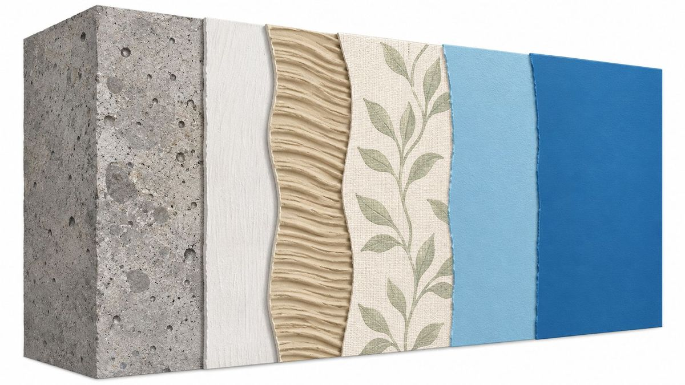

для комнаты 16 м² нужны 5 рулонов 1,06×10 м, 4–5 кг клея и 10–12 л краски в 2 слоя. Флизелин 110–130 г/м² выдерживает 1–2 перекраски, стеклообои 150–200 г/м² — 3–5, винил 200–300 г/м² — 2–3. Разница между дешёвым и правильным материалом — 12 000–35 000 руб. на комнату, но именно она определяет, пойдут ли трещины через 6–12 месяцев.
Флизелин, стеклообои или винил
| Материал | Плотность | Перекрасок | Цена за рулон 10,6 м² |
|---|---|---|---|
| Флизелин | 110–130 г/м² | 1–2 | 350–700 руб. |
| Стеклообои | 150–200 г/м² | 3–5 | 1 200–2 500 руб. |
| Винил на флизелиновой основе | 200–300 г/м² | 2–3 | 900–1 800 руб. |
Флизелин — нетканое полотно из целлюлозы и полиэстера: не растягивается, клей наносится только на стену, стык почти не виден. Стеклообои — стекловолокно с выраженной фактурой: перекрывают трещины до 1 мм, но требуют 2–3 слоёв краски, иначе фактура «съедает» цвет. Винил — вспененный слой на флизелине: самый гладкий и моющийся, но хуже пропускает пар, поэтому в ванной и на кухне без вытяжки не подходит.
Плотность: почему 110 и 200 г/м² — разные вещи
| Плотность | Что выдерживает | Где ставить | Риск |
|---|---|---|---|
| 110–130 г/м² | 1–2 покраски, мелкие неровности | спальня, кабинет | трещины основания проступают |
| 150–180 г/м² | 3–4 покраски, трещины до 0,5 мм | гостиная, детская | нужен качественный клей |
| 200–300 г/м² | 3–5 покрасок, трещины до 1 мм | коридор, кухня, лестница | тяжёлые, требуют армирования углов |
Плотность ниже 100 г/м² — это не обои под покраску, а подложка: после первого слоя краски проступают швы и микрорельеф стены. Проверять нужно не надпись «усиленные», а цифру в граммах на квадратный метр на этикетке.
Фактура: что видно после краски
| Тип | Как выглядит | Расход краски | Сложность |
|---|---|---|---|
| Гладкие | почти как штукатурка | 1 л на 10–12 м² | видны стыки и дефекты стены |
| Рогожка | мелкая сетка | 1 л на 8–10 м² | скрывает стыки, простая покраска |
| Ёлочка, ромб | выраженный рельеф | 1 л на 6–8 м² | нужен валик с длинным ворсом |
Чем глубже рельеф, тем больше краски уходит в углубления. На комнату 16 м² разница между гладкими и «ёлочкой» — 4–6 л, то есть 5 000–9 000 руб. на краске.
Клей и грунт
| Материал | Расход | На 45 м² стен | Цена |
|---|---|---|---|
| Грунт глубокого проникновения | 100–150 г/м² | 5–7 л | 400–900 руб. за 5 л |
| Клей для флизелина | 4–5 м²/кг | 9–11 кг | 600–1 200 руб. за 5 кг |
| Клей для стеклообоев | 3–4 м²/кг | 11–15 кг | 800–1 500 руб. за 5 кг |
Грунт обязателен: без него клей уходит в поры бетона, обои отваливаются по нижней кромке через 2–4 недели. Грунтовать нужно дважды с просушкой 4–6 часов, особенно газобетон и гипсовую штукатурку.
Краска: сколько слоёв и литров

| Краска | Расход в 2 слоя | На 45 м² | Цена за 5 л |
|---|---|---|---|
| Акриловая | 1 л на 8–10 м² | 10–12 л | 1 200–2 200 руб. |
| Латексная | 1 л на 6–8 м² | 12–15 л | 1 800–3 200 руб. |
| Силиконовая | 1 л на 10–12 м² | 8–10 л | 2 500–4 500 руб. |
Первый слой разбавляют на 5–10 % водой и наносят валиком с ворсом 10–12 мм, второй — неразбавленным, с ворсом 6–8 мм. Между слоями 4–6 часов при +20 °C. Тёмный цвет поверх светлого требует 3 слоёв: экономия на третьем слое даёт пятна при боковом свете.
Расчёт на комнату 16 м²
| Позиция | Количество | Стоимость |
|---|---|---|
| Обои флизелин 1,06×10 м | 5 рулонов (44,6 м² стен + 10 %) | 1 750–3 500 руб. |
| Клей 5 кг | 2 упаковки | 1 200–2 400 руб. |
| Грунт 5 л | 1,5 канистры | 600–1 400 руб. |
| Краска акриловая 5 л | 2,5 банки | 3 000–5 500 руб. |
| Работа мастера | 45 м² | 18 000–27 000 руб. |
Итого комната 16 м² «под ключ» — 24 500–40 000 руб. Если взять стеклообои вместо флизелина, материал дороже на 4 000–9 000 руб., но перекрашивать можно 3–5 раз без замены полотна.
Для коридора 6 м² с периметром 10 м и высотой 2,7 м площадь стен — 27 м², минус дверь 1,8 м² остаётся 25 м². Это 3 рулона 1,06×10 м и 6–7 л краски. Коридор и лестничная клетка — зоны с максимальным износом: здесь берут стеклообои 180–200 г/м², а не флизелин 110 г/м², иначе через 2 года появится затёртость на уровне рук.
Порядок работ
- Снять старые обои, промыть стену, зашпаклевать трещины и сколы.
- Прогрунтовать дважды, дать просохнуть 4–6 часов.
- Нарезать полотна с запасом 50 мм сверху и снизу, отбить вертикаль отвесом.
- Нанести клей на стену (флизелин) или на полотно (стеклообои), приклеить встык.
- Пройти валиком от центра к краям, выгнать воздух, обрезать излишки после высыхания.
- Через 24–48 часов покрасить в 2 слоя, первый — разбавленный.
Смета 2026
| Вариант | Материал на 45 м² | Работа | Итого |
|---|---|---|---|
| Флизелин 110 г/м² | 6 000–9 000 руб. | 18 000–24 000 руб. | 24 000–33 000 руб. |
| Стеклообои 180 г/м² | 12 000–18 000 руб. | 22 000–30 000 руб. | 34 000–48 000 руб. |
| Винил 250 г/м² | 9 000–14 000 руб. | 18 000–26 000 руб. | 27 000–40 000 руб. |
Переделка через год из-за трещин и отклеившихся стыков: снятие, выравнивание, новый материал и работа — 35 000–60 000 руб. Это и есть цена ошибки в выборе плотности.
Чек-лист перед покупкой
- Плотность указана в г/м² и не ниже 110 для спальни и 150 для гостиной.
- Рулоны из одной партии — номер партии совпадает на этикетках.
- Клей соответствует типу обоев, а не «универсальный на все случаи».
- Грунт куплен с запасом на два прохода.
- Краски хватает на 2 слоя с запасом 10 %.
Частые вопросы
Сколько раз можно красить флизелин?
Один-два раза. Третий слой утяжеляет полотно, швы расходятся, а снять краску без повреждения обоев нельзя.
Нужно ли шпаклевать стену под стеклообои?
Нет, достаточно заделать трещины и сколы. Фактура скрывает перепад до 1–2 мм, но не раковины глубиной 5 мм.
Можно ли клеить обои на старую краску?
Только если краска не меловая и держится на бетоне. Проверка: приклеить скотч, резко снять — если краска ушла вместе с ним, стена требует зачистки.
Чем красить, валиком или краскопультом?
Валик с ворсом 10–12 мм даёт ровный слой на фактуре. Краскопульт экономит 15–20 % краски, но требует разбавления и защиты окон.
Почему после покраски видны стыки?
Полотна наклеены с нахлёстом или стена не прогрунтована. Флизелин клеится только встык, а стык прокатывается валиком до полного схватывания.
Подходят ли обои под покраску для кухни?
Да, если это винил 250–300 г/м² или стеклообои и есть вытяжка. Флизелин 110 г/м² на кухне впитывает жир и через 2 года требует замены.
Сколько сохнет краска на обоях?
Акриловая — 4–6 часов при +20 °C и влажности 50 %, латексная — 6–8 часов, силиконовая — 8–12 часов. Второй слой по недосушенному первому даёт пузыри и липкость на 2–3 недели.
Что делать, если обои вздулись после покраски?
Пузырь проколоть иглой, выдавить воздух и прогладить тёплым утюгом через бумагу. Если вздутие большое, участок переклеить: подрезать крест-накрест, нанести клей и прижать валиком.
Источники
Материал подготовлен с опорой на следующие документы и данные:
Дисклеймер
Материалы журнала «Ремонт на примерах» носят информационный характер. Приведённые цены, сроки и нормативы являются ориентировочными: они зависят от региона, состояния объекта, уровня исполнителей и текущей рыночной ситуации, поэтому не могут служить точной сметой или гарантией результата. Перед началом работ проконсультируйтесь со специалистами и проверяйте актуальные требования нормативных документов. Редакция не несёт ответственности за решения, принятые на основании этих материалов.